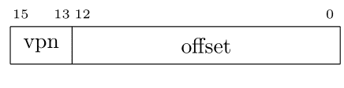
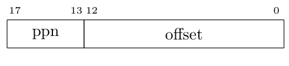
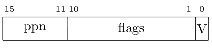
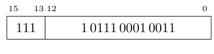
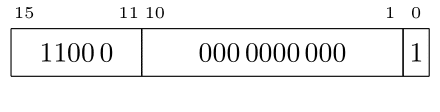
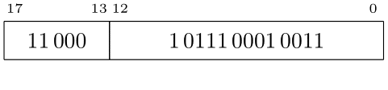

כרמי מרימוביץ
אתר אישי
top >>> Teaching >>> 2022/3 >>> 2022/3B מבוא לארכיטקטורת מחשבים >>> >>> 2022-08-18 >>> 16 ביט כתובת וירטואלית, 18 ביט כתובת פיזית, 8KB גודל דף
כתובת וירטואלית 16, כתובת פיזית 18, גודל דף 8KB
כתובת וירטואלית נראית כך:

גודל דף הוא
8KB
ולכן שדה ההיסט ברוחב 13 ביטים
(213=8192=8K).
ולכן יש שלושה ביטים בשדה מספר דף וירטואלי.

כיון שגודל דף וירטואלי וגודל דף פיזי שווים,
כתובת פיזית נראית כלהלן:

כיון שרוחב ה-vpn הוא 3 ביטים, בטבלת התירגום יש לכל היותר 8 מקומות. מספר זה קטן מספיק כדי שיהיו 8 אוגרים בתוך ה-mmu שיכילו את המידע. שימור לב שהמשמעות של אוגרים ב-mmu היא שבזמן החלפת הקשר על מערכת ההפעלה לדאוג להטעין להם ערכים מתאימים. בדרך כלל לא צריך לשמור את התוכן שלהם כי המידע זמין למערכת ההפעלה ממקורותיה. העובדה שיש צורך להטעין את האוגרים בזמן החלפת הקשר אומרת שאם יש מספר "גדול מדי" של אכניסות בטבלת התירגום אזי הטבלה צריכה להיות בזכרון ולא באוגרים בתוך ה-mmu. במקרה כזה ב-mmu יהיה אוגר שמכיל את כתובת תחילת טבלת התרגום. כמובן שבמצב כזה יש גישות עודפות לזכרון ובכך נטפל בהמשך.
בכל כניסה צריך מקום ל-5
ביטים עבור ppn
ודגלים.
שני בתים
(16 ביטים)
נשמע סביר למדי עבור גודל כניסה בנסיבות כאלו.
נניח שכניסה בטהלת התרגום נראית כך:

נניח שהערכים בטבלהׂ (בהקסה) הם כלהלן
| F801 |
| F001 |
| E801 |
| E001 |
| D801 |
| D001 |
| C801 |
| C001 |

השדה
vpn
מכיל 7.
נפרק את כניסה 7
של הטבלה,
שתוכנה C0001,
לפי השדות:

ה-valid
בכניסה 7 הוא אמת.
לכן לשדה ppn,
שערכו 11000,
יש משמעות והוא יחליף את
ה-vpn.

ובהקסה הכתובת הפיזית היא 31713.